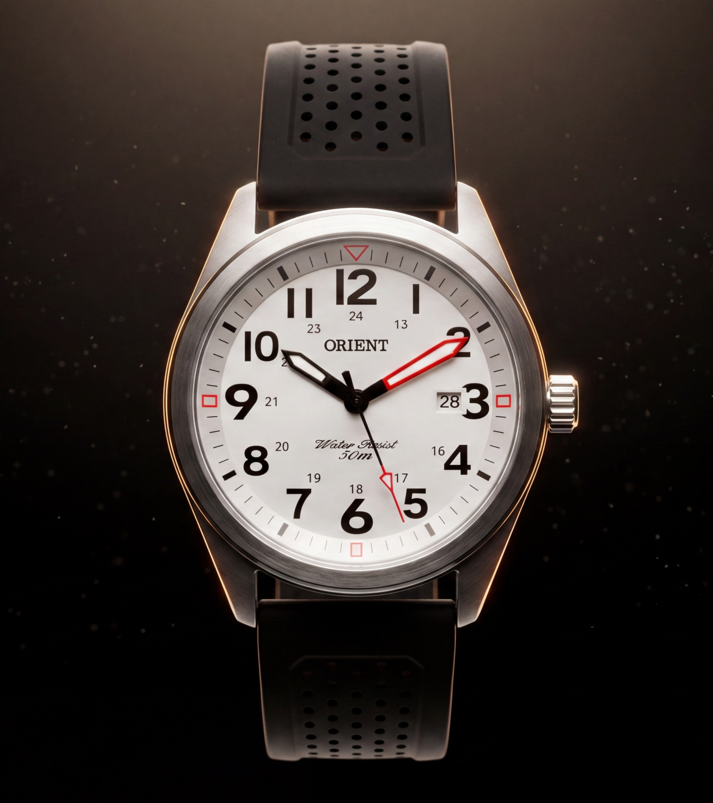
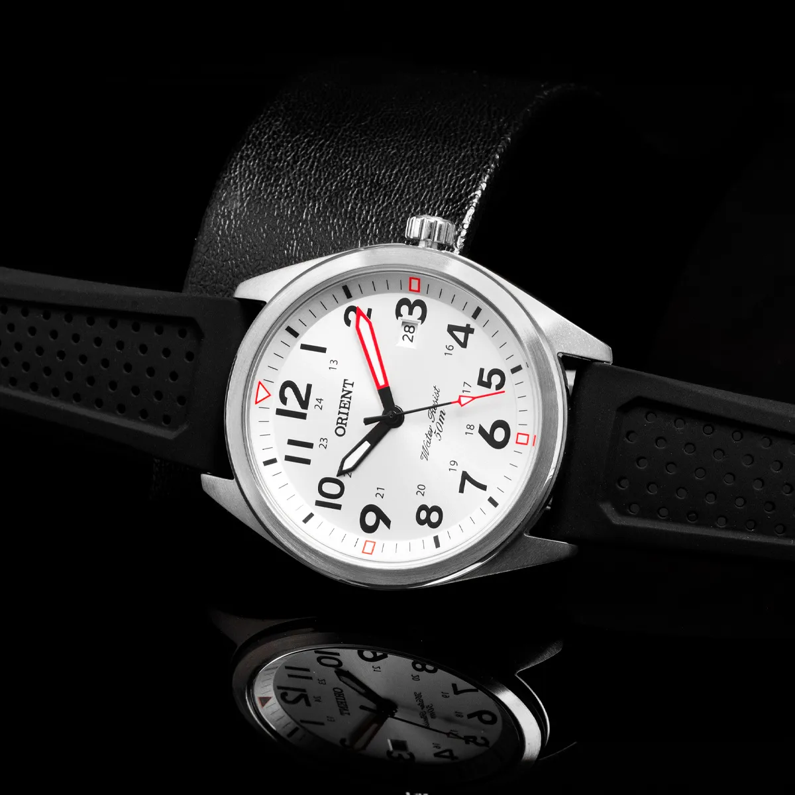
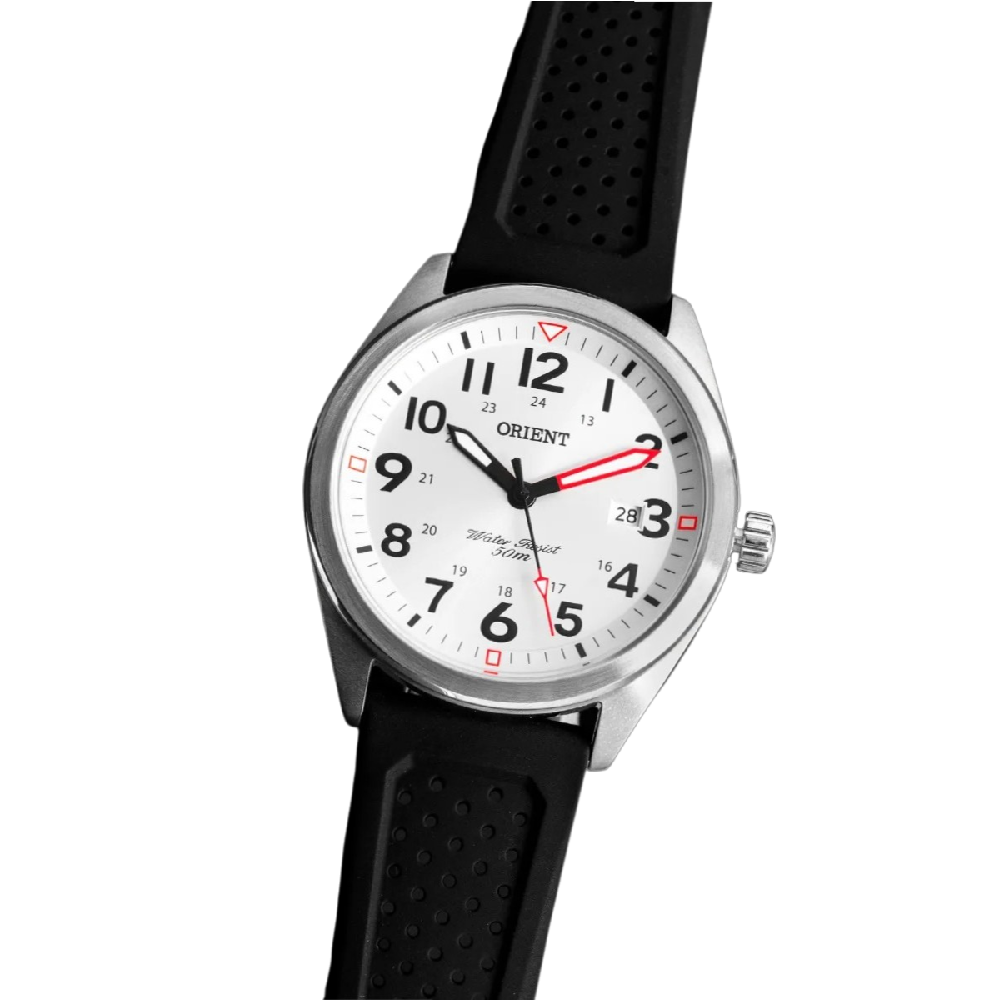

Tipografia, cores, componentes e movimento desta identidade — catalogados a partir do código real, sem aproximações nem estilos inventados.
Identidade de

Peça em Destaque
Water Resist 200m
Edição Limitada
Orient Automático F6922
Referência
RA-AC0M02S
Calibre
F6922

22 rubis
Calibre à mostra
01 — Tipografia
Hierarquia em Newsreader e Sans
Títulos usam .font-newsreader em peso light; texto corrido usa .font-sans. Valores medidos no breakpoint maior de cada estilo.
Duas notas fiéis à referência: .font-sans é o utilitário do Tailwind (pilha ui-sans-serif, system-ui…) e sobrepõe a 'Instrument Sans' declarada no body — que, aliás, não está entre as fontes carregadas. Já .font-serif aparece sempre acompanhada de .font-sans no mesmo elemento.
Paleta oficial extraída do relógio Orient. A escala stone do Tailwind foi remapeada para esses tokens, então os nomes de classe documentados aqui continuam válidos.
Os 8 tokens
Dial white · #F7F5F1
Fundo das seções claras. Também é o texto sobre fundo dark.
--dial-white
Numeral black · #1C1C1C
Texto em fundo claro.
--numeral-black
Orient red · #D93A2B
Acento e CTA. Doses pequenas — nunca como área grande.
--orient-red
Red hover · #B03426
Estado hover do vermelho.
--red-hover
Steel light · #C8C6C2
Bordas e divisores. No dark, também o texto de apoio.
--steel-light
Steel dark · #6E6C68
Texto secundário no claro.
--steel-dark
Strap black · #161616
Superfícies dark — cards e blocos elevados.
--strap-black
Backdrop · #0A0805
Fundo das seções dark.
--backdrop
Bordas, divisores e overlays
Sobre claro
border-stone-300/30 — divisor entre seções
border-stone-300/50 — divisores da newsletter
border-stone-800/10 — filete acima dos parceiros
border-stone-900/10 — interior do card de ingresso
shadow-[0_0_20px_rgba(217,58,43,0.1)] — botão do plano destacado
shadow-[0_-4px_20px_rgba(0,0,0,0.05)] — aba ativa
shadow-2xl shadow-black/20 — cards de imagem
shadow-inner — logo mark da barra de vidro
03 — Componentes
Peças em estado
Cada estado abaixo é a mesma marcação da referência com as classes que o :hover / :active / :focus aplicariam já ativadas — passe o mouse na coluna "default" para conferir.
Este é o único campo de formulário da referência. Não há estado de erro declarado — a validação é a nativa do atributo required em type="email".
Cards de plano — padrão, destacado e hover de borda
Estudante
Passe Acadêmico
R$24/ano
Card padrão — border-stone-200, hover leva a borda para stone-400.
Item de lista com ícone linear
Espaçamento vertical space-y-4
Mais Popular
Membro Curador
R$120/ano
Card destacado — elevado em md:-translate-y-4, com glow interno em blur-3xl.
Ícone na variante bold
Acento #D93A2B no ícone
Hover
Patrono Vitalício
R$500/ano
Mesmo card com hover:border-stone-400 já aplicado, e o botão em hover:bg-stone-50.
Cards de imagem, ingresso e artista
Restauração
Preservando a História
Edição Limitada
Orient Automático F6922
Referência
RA-AC0M02S
Calibre
F6922
22 rubis
Calibre à mostra
Abas em pasta + painel
Imortal.
Curada.
Iluminadora.
Tours personalizados, a cada passo.
Onde cada visitante é recebido com compreensão e cada caminho de exposição é uma jornada única de descobertas.

+5k
Abas: rounded-t-2xl -ml-6 -rotate-2/-rotate-1 origin-bottom-right hover:-translate-y-2 · Painel: rounded-[2.5rem] bg-cover bg-center shadow-2xl (na referência o painel carrega uma imagem de fundo remota via Supabase)
A referência não tem animações de entrada, scroll reveal nem @keyframes próprios — a única animação contínua é o animate-pulse do Tailwind. Todo o resto são transições disparadas por hover ou focus.
Valores base
Duração padrão do Tailwind (sem duration-*): 150ms